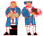

Tom Van Vleck Consulting LLC (01/07 - 01/26)
Consulting on security, system administration, web applications, cloud computing, data mining, patents, and programming. (Java, JavaScript, Perl, PHP, AJAX, Flash, Go, AWS, SOAP, MySQL, Eclipse; Linux, Windows, Macintosh)
SPARTA Inc. (Network Associates, McAfee) (11/01 - 12/06)
Senior Research Scientist
Research on computer security, Java obfuscation, mobile agents, reverse engineering, trusted computing (TCPA), mandatory security, TCP/IP. Principal Investigator for research projects funded by DARPA and AFRL. (Java, C; UNIX, Linux, Windows, Macintosh, Darwin, FreeBSD)
Encirq (TransIlluminant) (12/98 - 10/01)
Distinguished Engineer
Development of a new internet marketing service product that provided advertising targeting while preserving the privacy of end users. Employee #5 of this San Francisco startup. Established Java class architecture and division of function between Java and JavaScript; built the initial prototype of the product; led the evolution of the client-side implementation into the product version, deployed to customers of several banks. (Java, Javascript, HTML, LISP, Oracle; Windows, UNIX, Macintosh)
Sun Microsystems (8/98 - 12/98)
Senior Staff Engineer
Electronic Commerce Group. Java Commerce Client (Java Wallet). Design & implementation, security, quality. (Java; Windows 95, Solaris)
CyberCash (3/96 - 7/98)
Principal Engineer, Systems
West Coast technical and quality lead. Electronic payment applications & protocols, security. Worked at Sun JavaSoft on Java security and electronic commerce framework. Engineering manager for CyberCash's Secure Electronic Transaction (SET) protocol pilot implementation (project with Netscape, Visa, Toshiba, and IBM) and SET compliance testing. (Java, JavaScript, HTML, C++; Windows 95, Solaris)
Taligent (9/92 - 2/96)
Principal Engineer
Object-oriented security, software engineering, development process and change control, code and design review, quality, system boot. OMG CORBA Security Working Group. (C++; Macintosh, AIX, Taligent Pink, Mach)
Tandem Computers (9/81 - 9/92)
Manager, Work Group Software QA; Software Designer
Software defect prevention and analysis, development process, workstation integration, remote SQL procedure call, X-windows, CASE, management tools, OS security. Managed 14 people on QA of PC/mainframe integrated 4GL/database, office automation, electronic mail, text editor and formatter. Coordinated OS architecture & implemented object-oriented file system for new OS; worked on system boot, tools, development process. Extended transaction management for current product line. (C, Pascal, Ada, TAL, NonStop SQL; Tandem Guardian, MS-DOS, Windows, OS/2, Macintosh, SunOS)
Honeywell, Multics Development (5/74 - 9/81)
Principal Staff Engineer; Manager, Multics End User Facilities
Development process, tools, database storage system, long term direction & planning. Managed 10 people on relational data base, word processing, ARPANet gateway. Led team of 25 in redesign of file system. Major design and implementation contributions to system administration and security, command interface, hard core supervisor, transaction processing, tools, reliability, fault tolerance, printer control, and system documentation. (PL/I, ALM; Multics)
Pontifícia Universidade Catôlica, Rio de Janeiro (3/74 - 4/74)
Visiting Professor, Rio Data Centro
Time-sharing, PL/I, computing center administration. (OS/360, TSO)
Massachusetts Institute of Technology (2/65 - 5/74)
Manager, System Analysis and Planning; System Programmer
Information Processing Center: Programming, system administration, operations. Billing systems, pricing algorithms, budgets, graphics. (PL/I, MAD, FAP, FORTRAN, Assembler; Multics, CTSS, CP/CMS, OS/360)
Project MAC: Design, implementation, & system administration of operating systems, security, accounting, system boot, development tools. (PL/I, MAD, FAP; Multics, CTSS)
Political Science Department: Statistics, data manipulation, simulation, system programming for Data Bank project and Project COMCOM. (MAD, FAP, Autocoder; CTSS & FMS, 1401)

Massachusetts Institute of Technology, B.S., Mathematics, 1965
US Patent 8,302,170 October 30, 2012
Method for Enhancing Network Application Security
Details on request.
30 Jan 2026
https://multicians.org/thvv/tvvvita.html